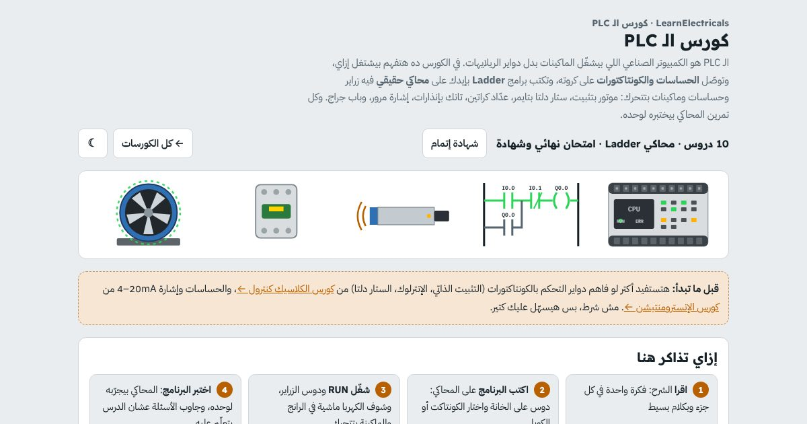

كورس · برمجة Ladderبالعربي
كورس الـ PLC
تكتب برامج Ladder بإيدك على محاكي فيه زراير وحساسات وماكينات بتتحرك، وتفهم الـ PLC من التوصيل لحد التربل شوتنج.
الدرس الأول مجاني، بحساب مجاني

المحتوى
الدروس
بالترتيب، وكل درس فيه شرح بسيط وتجارب بإيدك وأسئلة.
- يعني إيه PLC؟مفتوح للكلالفرق بينه وبين دواير الريلاي، دورة السكان، وأجزاءه: CPU والباور وكروت الدخل والخرج، والشركات المشهورة
- من الريلايهات للـ PLC
- دورة السكان (Scan cycle)
- تمريندورة السكان بالبطيء
- أجزاء الـ PLC
- تمرينراك PLC
- الشركات المشهورة
- أعطال شائعة في الموقع
- أسئلةأسئلة الدرس
- توصيل الـ PLCباور 24V DC، الدخل Sinking و Sourcing مع حساسات PNP و NPN، والخرج ريلاي وترانزستور
- الباور: 24V DC
- كارت الدخل: Sinking و Sourcing
- كارت الخرج: ريلاي ولا ترانزستور؟
- البنش: وصّل بإيدك
- تمرينبنش التوصيل
- أعطال شائعة في الموقع
- أسئلةأسئلة الدرس
- أول برنامج Ladderالكونتاكت NO و NC والكويل، AND و OR، وفخ زرار الـ Stop المتوصّل NC
- الكونتاكت والكويل
- كونتاكت NO -| |-
- كونتاكت NC -|/|-
- كويل -( )-
- AND و OR
- المحاكي: AND و OR
- محاكيمحاكي Ladder
- تمرينAND: المكبس
- تمرينOR: لمبة السلم
- الفخ: زرار الـ Stop المتوصّل NC
- محاكيجرّب الفخ بنفسك
- تمرينزرار Stop NC
- العناوين في الشركات المختلفة
- أعطال شائعة في الموقع
- أسئلةأسئلة الدرس
- التثبيت الذاتي والـ Set/Resetتشغيل وإيقاف موتور DOL بالتثبيت، الـ Set و Reset، والإنترلوك في عكس الحركة
- التثبيت الذاتي (Seal-in / Latch)
- التمرين: موتور DOL بأوفرلود
- محاكيمحاكي: موتور DOL
- تمرينDOL بأوفرلود
- Set و Reset
- محاكيمحاكي: Set و Reset
- الإنترلوك: أمام وخلف
- محاكيمحاكي: أمام وخلف
- أعطال شائعة في الموقع
- أسئلةأسئلة الدرس
- التايمراتTON و TOF و TP، وبرنامج ستار دلتا بالتايمر
- التايمر في الـ Ladder
- TON و TOF و TP بالرسم
- تمرينرسم التوقيت الحي
- التمارين: TON و TOF
- محاكيمحاكي: التايمرات
- تمرينTON: تأخير تشغيل
- تمرينTOF: تأخير فصل
- ستار دلتا بالتايمر
- محاكيمحاكي: ستار دلتا
- أعطال شائعة في الموقع
- أسئلةأسئلة الدرس
- العدادات والمقارنةCTU و CTD، عدّاد التعبئة على السير، وتعليمات المقارنة في جراج العربيات
- العدّاد CTU و CTD
- مشروع: عدّاد التعبئة
- محاكيمحاكي: سير التعبئة
- تمرينعدّاد التعبئة
- تعليمات المقارنة
- محاكيمحاكي: الجراج
- أعطال شائعة في الموقع
- أسئلةأسئلة الدرس
- الذاكرة والـ Flags والـ Edgeبتات الـ M، الـ Rising و Falling edge، وزرار واحد للتشغيل والإيقاف
- بتات الذاكرة M
- الحافة: Rising و Falling edge
- تمرين: زرار واحد يشغّل ويطفي
- محاكيمحاكي: Toggle
- تمرينToggle بزرار واحد
- تمرين: إنذار بذاكرة
- محاكيمحاكي: الإنذار
- تمرينإنذار وتأكيد
- أعطال شائعة في الموقع
- أسئلةأسئلة الدرس
- الإشارات الأنالوج في الـ PLCمن 4–20mA لـ Raw counts للقيمة الحقيقية، وتانك بإنذارات High و Low وتحكم في الطلمبة
- من التانك للرقم
- تمرينسلسلة الإشارة
- تمرين التحويل
- تمرينRaw ↔ قيمة ↔ mA
- في البرنامج: SCL والمقارنة
- مشروع: تانك بإنذارات
- محاكيمحاكي: التانك
- تمرينتانك بإنذارات
- أعطال شائعة في الموقع
- أسئلةأسئلة الدرس
- مشاريع عمليةإشارة مرور، تانك خلط، فرز كراتين على سير، وباب جراج: كل مشروع بماكينة متحركة واختبار أوتوماتيك
- قبل ما تكتب: فكّر في الخطوات
- المشاريع الأربعة
- محاكيمحاكي المشاريع
- تمرينإشارة المرور
- تمرينتانك الخلط
- تمرينفرز الكراتين
- تمرينباب الجراج
- التحكم في البوزيشن بالإنكودر
- أعطال شائعة في الموقع
- أسئلةأسئلة الدرس
- التربل شوتنج والامتحان النهائيالمونيتور أونلاين والفورس، أشهر الأخطاء في البرامج، والامتحان النهائي
- طريقة التفكير: من برّه لجوّه
- الفورس (Force)
- صلّح البرامج
- محاكيمحاكي: برامج فيها أعطال
- تمرينالكويل المكرر
- تمرينمنطق الـ NC الغلط
- تمرينالتثبيت في المكان الغلط
- أعطال شائعة في الموقع
- أسئلةأسئلة الدرس
- امتحانالامتحان النهائي
- اتدرّب على براندات حقيقية
- محاكيSiemens S7-1200
- تمرينموتور DOL بأوفرلود
- تمرينأمام وخلف بإنترلوك
- تمرينستار دلتا بتايمر IEC
- تمرينإنذار بتأكيد (Ack)
- تمرينعدّاد علب CTU
- تمرينتانك أنالوج NORM_X و SCALE_X
- تمرينصلّح إشارة البوابة
- تمرينتقطيع صاج بالطول بالإنكودر (HSC)
- تمرينتحدّي المصنع: خط تعبئة كامل
- محاكيDelta DVP
- تمرينطلمبة بحماية من التشغيل على الناشف
- تمرينمكبس بإيدين (Two-hand)
- تمرينكشاف بزرار واحد (LDP)
- تمرينستار دلتا بـ TMR K50
- تمرينعدّاد كراتين CNT
- تمرينإشارة مرور بـ 3 تايمرات
- تمرينصلّح سير الفرز
- تمرينتقطيع صاج بالطول بالإنكودر (C251)
- تمرينتحدّي المصنع: 3 دفعات خلط
- محاكيAllen-Bradley
- تمرينسير بتشغيل وإيقاف
- تمرينأمام وخلف بإنترلوك
- تمرينكشاف بزرار واحد (ONS)
- تمرينستار دلتا بـ TON و .DN
- تمرينجراج بـ CTU و CTD ومقارنة
- تمرينتانك أنالوج بـ SCP
- تمرينصلّح عدّاد الكراتين
- تمرينتقطيع صاج بالطول بالإنكودر (HSC)
- تمرينتحدّي المصنع: باب مخزن أوتوماتيك
الكورس بالأرقام
10دروس من دورة السكان لحد المشاريع
4مشاريع بماكينات بتتحرك واختبار أوتوماتيك
1امتحان نهائي وشهادة إتمام
39تمرين وتجربة وسؤال بيتصحّحوا لوحدهم
الـ PLC
إنت هتتعلّم إيه
- تفهم الـ PLC بيشتغل إزاي، ودورة السكان، وأجزاءه
- توصّل حساسات PNP و NPN على الدخل، وخرج ريلاي وترانزستور
- تكتب Ladder بالكونتاكت NO و NC والكويل، و AND و OR
- تشغّل وتوقف موتور بالتثبيت الذاتي والـ Set/Reset والإنترلوك
- تستخدم التايمرات TON و TOF و TP وتبرمج ستار دلتا
- تعدّ بالـ CTU و CTD وتقارن القيم
- تحوّل إشارة 4–20mA للقيمة الحقيقية وتعمل إنذارات High و Low
- تطلّع أخطاء البرامج بالمونيتور أونلاين والفورس
لمين
مين الكورس ده ليه
- لفنيين الكهربا والصيانة اللي عايزين يدخلوا الأوتوميشن
- لطلبة هندسة كهربا وميكاترونيكس وتحكم
- لو بتعرف الكلاسيك كنترول وعايز تحوّل الدواير لبرنامج
- لو هتشتغل على Siemens أو Allen-Bradley أو Delta ومحتاج الأساس الأول
أسئلة بتتكرر
قبل ما تسأل
محتاج خلفية قبل الكورس؟
هتستفيد أكتر لو فاهم دواير التحكم بالكونتاكتورات: التثبيت الذاتي والإنترلوك والستار دلتا. لو لسه، ابدأ بكورس الكلاسيك كنترول.
الكورس على PLC ماركة معيّنة؟
المحاكي مدرّب عام بعناوين على طريقة IEC / Siemens زي I0.0 و Q0.0. المنطق واحد في كل الـ PLCs، والفرق في شكل العناوين وأسماء التعليمات بس. وفيه كمان محاكي بشكل Siemens و Delta و Allen-Bradley، في كل واحد 8 تمارين من مصانع حقيقية.
محتاج أسطّب برنامج؟
لأ. محاكي الـ Ladder شغال في المتصفح على الموبايل والكمبيوتر. ومش بديل عن برنامج الشركة زي TIA Portal أو Studio 5000.
فيه شهادة؟
أيوه. لما تخلّص كل الدروس والامتحان النهائي وانت داخل بحسابك، تطلّع شهادة إتمام بكود تحقق و QR.
الكورس مجاني؟
الدرس الأول مجاني لأي حد عامل حساب مجاني. باقي الدروس محتاجة حساب مجاني تعمله في ثواني بإيميلك.
جاهز تبدأ الـ PLC؟
الدرس الأول مجاني، بحساب مجاني. ادخل دلوقتي وكمّل على راحتك، وتقدّمك بيتحفظ.